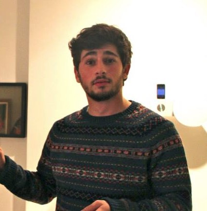

Team

Cooper Matthieson,
Mechanical Engineering
Cooper Matthieson is from Santa Barbara California. While at Columbia he has spent his time
focusing on robotics, engineering design, and academic research with professor's James Hone
and Robert Farrauto. Outside of school, he has worked at the NASA Ames Research Center and
the SETI Institute. After school he is going to work at Boeing as a robotics, automation,
and assembly engineer.
Caroline Herald,
Mechanical Engineering
Caroline is from Miami, Florida. At school she has studied mechanical engineering with a
minor in entrepreneurship and innovation. Next year she is headed to George Washington
University to study intellectual property and patent law. Her favorite part of working
on DartBot was rapid prototyping with the 3D printer. She also did some great CAD.

Brendan Chamberlain-Simon,
Mechanical Engineering
Brendan is from Riverwoods, Illinois. His primary
interests center around space robotics. He has worked for Professor Peter Allen's robotics
laboratory at Columbia where he designed and built a 7 DOF wheelchair mounted robotic arm,
and for NASA where he designed and implemented a new drive system for the Regolith Advanced
Surface Systems Operations Robot. Brendan is working in the robotics department at NASA's
Jet Propulsion Laboratory when he graduates.
Kevin Roark,
Computer Science
Kevin is a computer science major from Louisiana. He has focused on multimedia applications,
computer music, and programming language theory. He is interested in working with computer vision
techniques and has enjoyed the Arduino with DartBot. DartBot has taught him a lot more about
physical machines. After school he hopes to stay in New York and work on projects. Lots of projects.